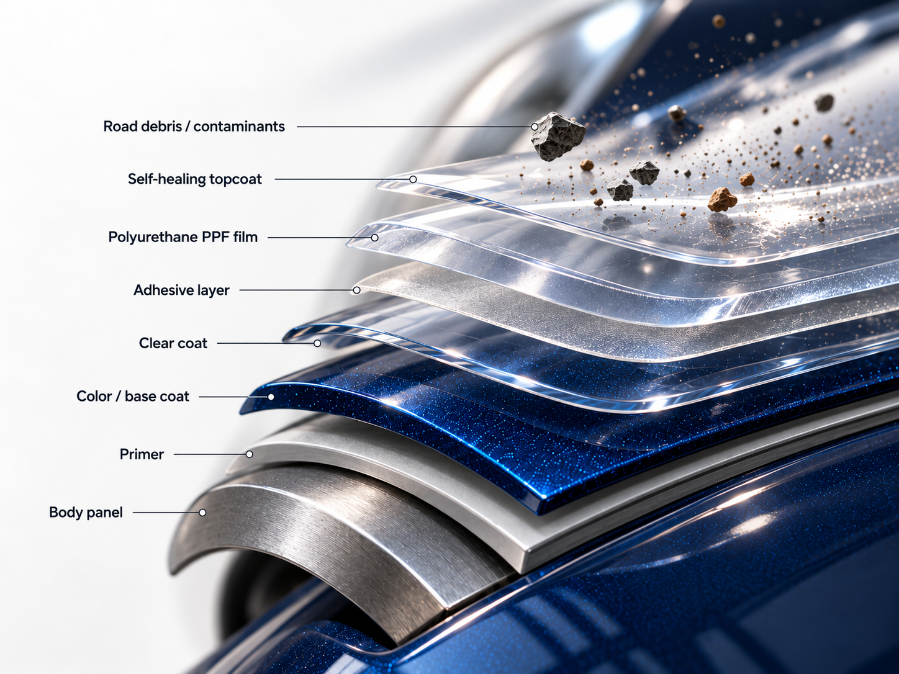
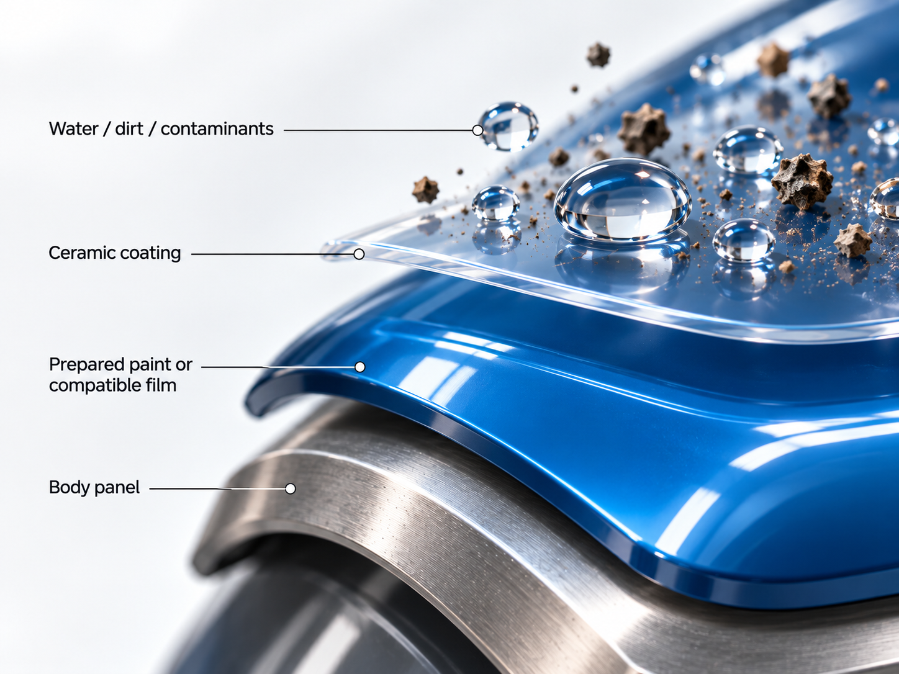
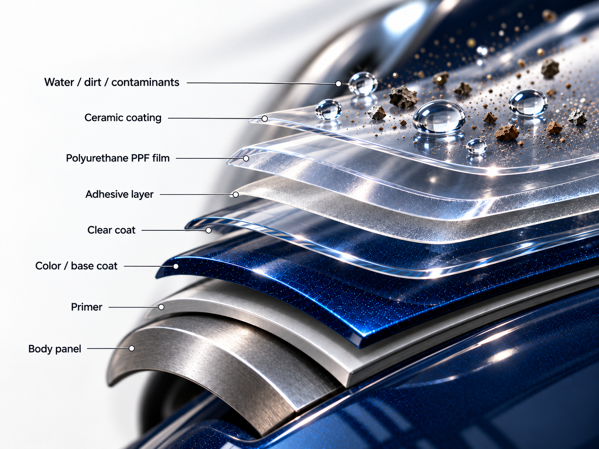

PPF is the physical barrier
Paint protection film is a film installed over selected painted panels. XPEL describes ULTIMATE PLUS as a clear-coated polyurethane film designed to help protect against stone chips and abrasion, with a topcoat that can heal light scratches. Choose PPF when small stone chips and scuffs are your main concern. A hard impact can still damage the paint, and the film needs regular care.

What does ceramic coating do?
Ceramic coating forms a thin layer over prepared paint or compatible PPF. It helps water and dirt release from the surface, making washing easier. It does not provide the same physical protection as film and will not stop rock chips. You still need to wash the car.

Can I use PPF and ceramic coating together?
Yes. PPF goes on prepared paint first, then a compatible ceramic coating can go over the film. You can also coat the exposed paint on panels without PPF. The products need to work together, and both need the right preparation and curing time.

Do I need both on the whole car?
No. You might choose full-front PPF for the panels most exposed to road debris and ceramic coating for easier cleaning across the car. Full-body PPF is another option if you want more paint covered. Tell us about your driving, the paint condition and your budget so we can quote the combination that fits.